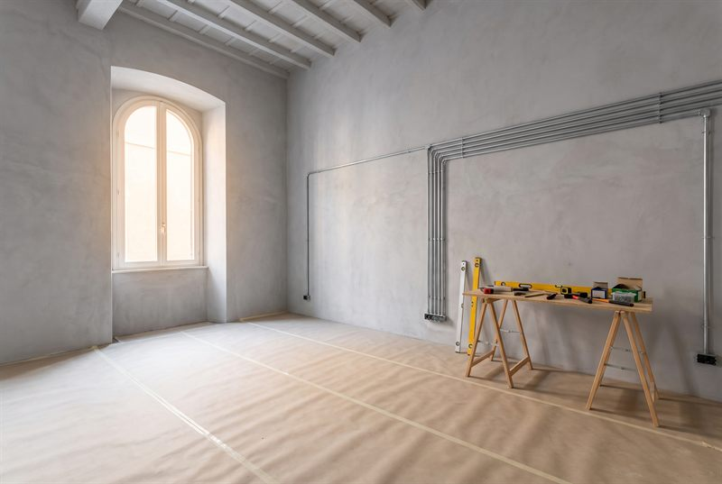
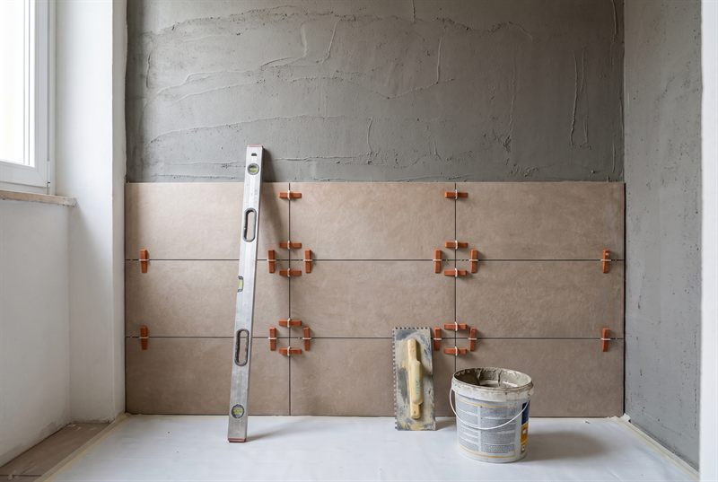
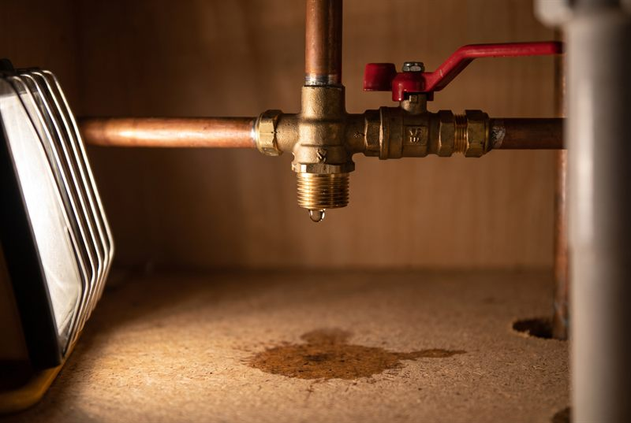
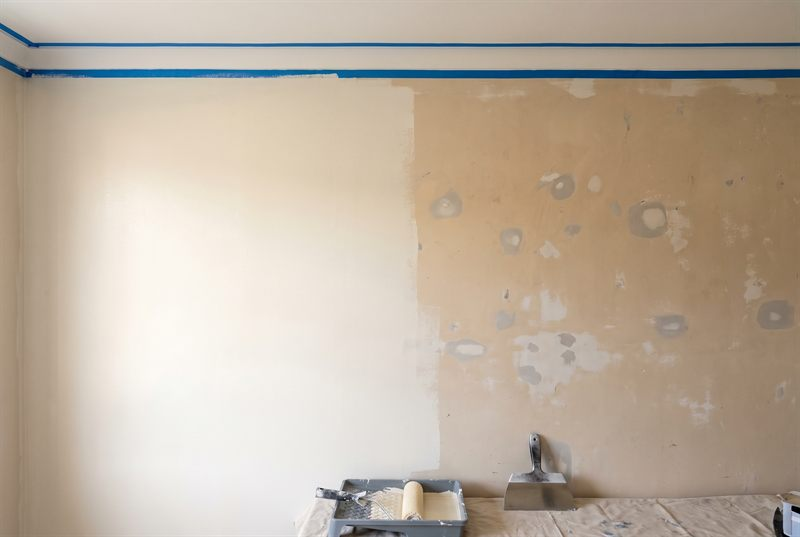
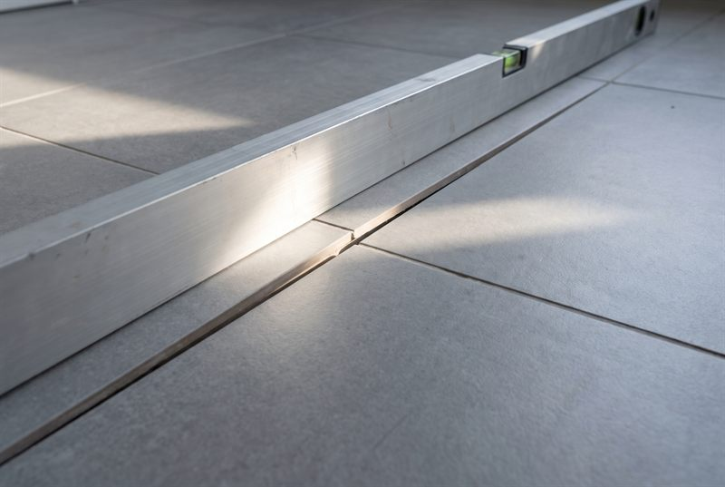
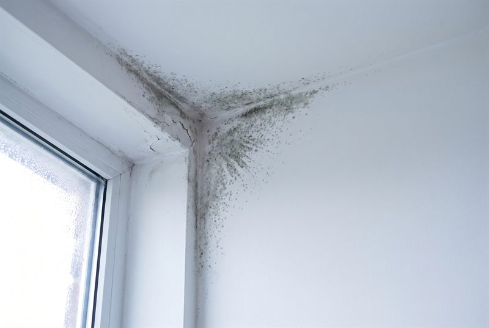
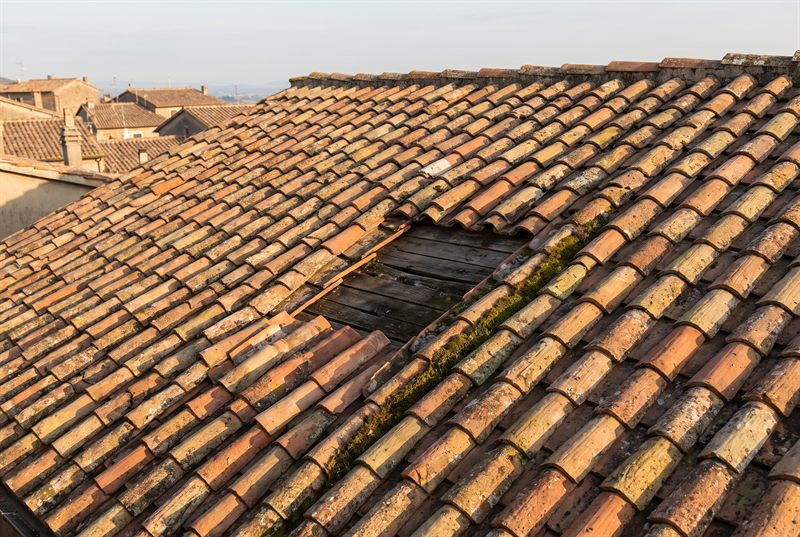
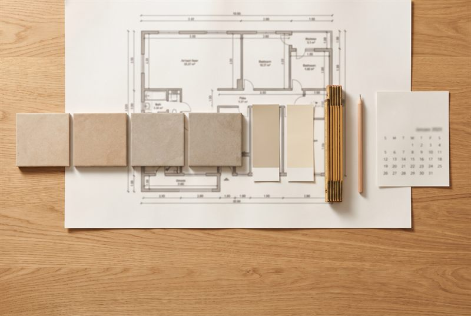
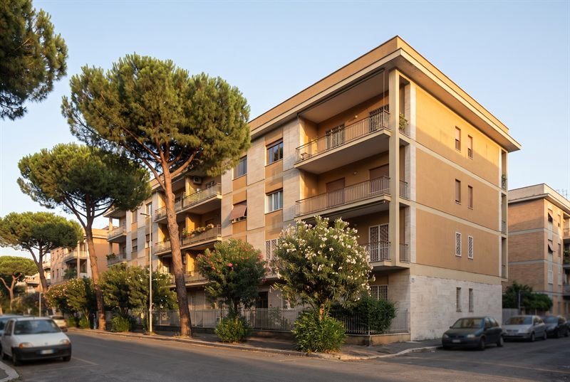

Ristrutturazione casa a Roma: quanto costa davvero e come non farsi fregare
Fattori di costo, tempi reali, errori da evitare e come scegliere l'impresa giusta.
Leggi la guida →Un solo referente dall'inizio alla fine, il prezzo bloccato in contratto e il cantiere che segui passo per passo.
Ristrutturazioni complete o singoli interventi, a Roma e Viterbo. Un unico interlocutore che coordina impianti, muratura e finiture, e si prende anche la burocrazia.
Appartamenti, case e locali chiavi in mano: demolizioni, rifacimenti, impianti, finiture. Un referente dall'inizio alla fine.
Richiedi un preventivo →Rifacimento completo: massetti, impermeabilizzazioni, rivestimenti, sanitari, box doccia e allacci.
Richiedi un preventivo →Impianti nuovi e rifacimenti, sostituzione tubazioni, ricerca perdite, linee elettriche.
Richiedi un preventivo →Posa di gres, ceramica e laminato, livellamento massetti, rimozione di vecchi pavimenti.
Richiedi un preventivo →Imbiancatura, pareti e librerie in cartongesso, velette e controsoffitti con illuminazione integrata.
Richiedi un preventivo →Rifacimento e riparazione tetti, impermeabilizzazioni, infiltrazioni, grondaie. Ripristino e tinteggiatura di facciate.
Richiedi un preventivo →Installazione di condizionatori, se non già previsti nel preventivo iniziale: predisposizione linee e montaggio incluso.
Richiedi un preventivo →Nessuno può darti una cifra definitiva guardando un sito. Questa è una stima onesta sui prezzi di lancio 2026: serve a capire l'ordine di grandezza, non a firmare.
Stima orientativa, non un'offerta. IVA agevolata 10% esclusa. Il prezzo esatto, quello bloccato in contratto per il lavoro concordato, nasce dopo il preventivo video e l'audit tecnico.
Manda i dati e ricevi il preventivoClicca su una fase per vedere cosa succede. Una ristrutturazione completa dura fra i 60 e i 90 giorni lavorativi: la maggior parte di quel tempo sono tempi tecnici che non si comprimono.
Audit tecnico in casa: verifichiamo impianti, solai, umidità, stato di massetti e intonaci. Da qui esce il preventivo definitivo, che diventa contratto a corpo con il calendario allegato.
Video girati sul posto, dal grezzo alla consegna. Non ricostruzioni, non archivio.
«Muri storti e piastrelle a vuoto.»
Non sai a chi affidarti. Ti mostriamo il lavoro prima, non promesse.
Vedi come lavoriamo → 02 · Investitori«Ogni mese di fermo è un canone perso.»
Prezzo bloccato, data certa, documenti per il rogito.
Pronto da affittare → 03 · Partner«Capomastro suo malgrado.»
Cantiere pilota, report settimanale, il cliente resta vostro.
Area partner →Risposte oneste alle domande che riceviamo ogni settimana.

Fattori di costo, tempi reali, errori da evitare e come scegliere l'impresa giusta.
Leggi la guida →
Fasi, tempi, errori costosi e quando serve la CILA per il bagno.
Leggi la guida →
Perdita d'acqua, tubo rotto, scarico ingorgato: i primi 10 minuti che ti fanno risparmiare centinaia di euro.
Leggi la guida →
Pittura, preparazione, tempi, prezzo al m²: le domande che distinguono un imbianchino serio.
Leggi la guida →Edilizia libera, CILA, SCIA: quale pratica serve per il tuo lavoro.
Leggi la guida →I raggiri più comuni a Roma e Viterbo, raccontati da chi è in cantiere da oltre 20 anni.
Leggi la guida →
Gli sbagli che vediamo più spesso nei cantieri, e come evitarli.
Leggi la guida →
Cause vere, rimedi immediati e soluzioni definitive contro muffa e umidità.
Leggi la guida →Le domande che distinguono un professionista serio da una brutta sorpresa.
Leggi la guida →
Macchie, tegole, grondaie: come capire quando intervenire prima del danno grosso.
Leggi la guida →
Budget, preventivo, tempi, consegna: il percorso giusto dall'inizio alla fine.
Leggi la guida →
Cassia, Flaminia, Fleming, Prima Porta: differenze, costi medi e tempi.
Leggi la guida →Guide su bagno, tetto, impianti, permessi CILA/SCIA, anche per Bracciano, Sutri, Nepi, Civita Castellana, Roma Nord e Tuscia.
Scatti reali presi durante i lavori: niente foto da catalogo, solo cantieri veri a Roma e Viterbo.
Le domande che ci fanno piu spesso i clienti di Roma e Viterbo.
In tutta Roma e provincia (centro storico, Roma Nord lungo la Cassia e Flaminia, Bracciano, Anguillara Sabazia, Trevignano, Formello, Campagnano) e in tutta la provincia di Viterbo (Viterbo citta, Sutri, Nepi, Civita Castellana, Vetralla, Capranica, Ronciglione, Caprarola, Bassano Romano). Il sopralluogo e gratuito in entrambe le zone.
Si. Sopralluogo, consulenza e preventivo scritto sono sempre gratuiti e senza impegno. Decidi tu, con calma, dopo aver visto prezzi e tempi nero su bianco.
Ristrutturazione interna ed esterna della casa, dal pavimento al tetto: ristrutturazioni complete, bagni, impianti idraulici, pitture, cartongesso, pavimenti e, all'esterno, tetti, facciate e impermeabilizzazioni.
Dipende da superficie, stato dell'immobile e tipo di intervento: non esiste un prezzo fisso valido per tutti i casi. Usa il calcolatore per una prima stima orientativa, poi fissiamo un sopralluogo gratuito per il prezzo esatto scritto nero su bianco.
Lavoriamo in cantiere dal 2003: oltre 20 anni di mestiere e numerosi lavori completati tra Roma e Viterbo.
Il modo piu rapido e WhatsApp al 389 448 1853: scrivi due righe sul lavoro, allega una foto se puoi, e ricevi una prima valutazione. Oppure usa il modulo qui sotto.
Un bagno completo (demolizione, impianti, piastrelle, sanitari) richiede in media 2-3 settimane. I tempi possono variare se ci sono imprevisti sugli impianti esistenti: per questo il sopralluogo gratuito conta, vi da date realistiche.
Si, siamo operativi dal lunedi al sabato, dalle 8:00 alle 19:00. Per urgenze potete scriverci su WhatsApp in qualsiasi momento.
Dipende dal tipo di intervento. Per una semplice rinfrescata (pittura, pavimenti) di solito basta una CILA. Per lavori strutturali serve la SCIA. Vi indichiamo noi quale pratica serve e, se volete, vi affianchiamo con un tecnico di fiducia per la parte burocratica.
Descrivi il lavoro in due righe: ricevi una valutazione onesta e, se serve, fissiamo subito il sopralluogo gratuito.
Il messaggio si apre direttamente nel tuo WhatsApp: niente dati salvati sul sito, niente spam.
Sopralluogo gratuito in tutta la provincia di Roma e di Viterbo. Ecco i comuni dove interveniamo piu spesso:
Roma centro storico · Roma Nord (Cassia, Flaminia, Prima Porta) · Roma Sud · Bracciano · Anguillara Sabazia · Trevignano Romano · Formello · Campagnano di Roma · Sacrofano · Riano · Castelnuovo di Porto · Morlupo
Viterbo citta · Sutri · Nepi · Civita Castellana · Vetralla · Capranica · Ronciglione · Monterosi · Caprarola · Bassano Romano · Oriolo Romano · Fabrica di Roma · Castel Sant'Elia
Scrivici comunque: copriamo tutta la provincia di Roma e di Viterbo. Il sopralluogo resta gratuito ovunque, dal pavimento al tetto.
Verifica la tua zonaUsiamo cookie tecnici e, solo con il tuo consenso, cookie di statistica e di misurazione pubblicitaria per capire come viene usato il sito. Leggi la Privacy e Cookie Policy.